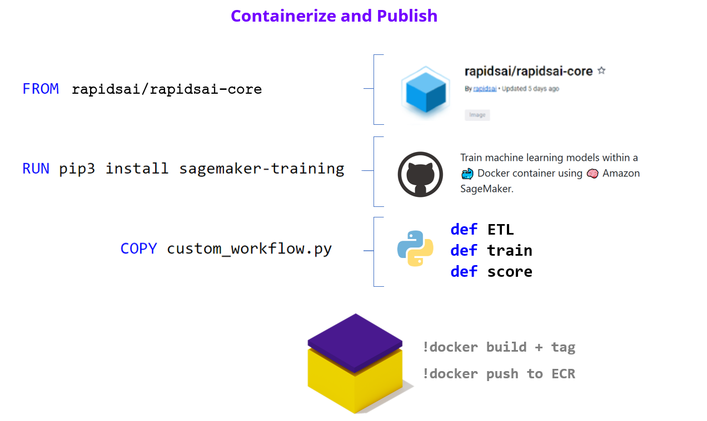

SageMaker#
RAPIDS can be used in a few ways with AWS SageMaker.
SageMaker Notebooks#
SageMaker Notebook Instances can be augmented with a RAPIDS conda environment.
We can add a RAPIDS conda environment to the set of Jupyter ipython kernels available in our SageMaker notebook instance by installing in a lifecycle configuration script.
To get started head to SageMaker and create a new SageMaker Notebook Instance.
Select your instance#
Select a RAPIDS compatible GPU (NVIDIA Pascal or greater with compute capability 6.0+) as the SageMaker Notebook instance type (e.g., ml.p3.2xlarge).
Create a RAPIDS lifecycle configuration#
Create a new lifecycle configuration (via the ‘Additional Options’ dropdown).
Give your configuration a name like rapids and paste the following script into the “start notebook” script.
#!/bin/bash set -e sudo -u ec2-user -i <<'EOF' mamba create -y -n rapids -c rapidsai-nightly -c conda-forge -c nvidia rapids=23.04 python=3.10 cudatoolkit=11.5 ipykernel conda activate rapids # optionally install AutoGluon for AutoML GPU demo # python -m pip install --pre autogluon python -m ipykernel install --user --name rapids echo "kernel install completed" EOF
Set the volume size to at least 15GB, to accommodate the conda environment.
Then launch the instance.
Select the RAPIDS environment#
Once your Notebook Instance is InService select “Open JupyterLab”
Then in Jupyter select the rapids kernel when working with a new notebook.

SageMaker Estimators#
RAPIDS can also be used in SageMaker Estimators. Estimators allow you to launch training jobs on ephemeral VMs which SageMaker manages for you. The benefit of this is that your Notebook Instance doesn’t need to have a GPU, so you are only charged for GPU instances for the time that your training job is running.
All you’ll need to do is bring in your RAPIDS training script and libraries as a Docker container image and ask Amazon SageMaker to run copies of it in-parallel on a specified number of GPU instances in the cloud. Let’s take a closer look at how this works through a step-by-step approach:
Training script should accept hyperparameters as command line arguments. Starting with the base RAPIDS container (pulled from Docker Hub), use a
Dockerfileto augment it by copying your training code and setWORKDIRpath to the code.Install sagemaker-training toolkit to make the container compatible with Sagemaker. Add other packages as needed for your workflow needs e.g. python, flask (model serving), dask-ml etc.
Push the image to a container registry (ECR).

Having built our container and custom logic, we can now assemble all components into an Estimator. We can now test the Estimator and run parallel hyperparameter optimization tuning jobs.
estimator = sagemaker.estimator.Estimator(
image_uri,
role,
instance_type,
instance_count,
input_mode,
output_path,
use_spot_instances,
max_run=86400,
sagemaker_session,
)
estimator.fit(inputs=s3_data_input, job_name=job_name)
hpo = sagemaker.tuner.HyperparameterTuner(
estimator,
metric_definitions,
objective_metric_name,
objective_type="Maximize",
hyperparameter_ranges,
strategy,
max_jobs,
max_parallel_jobs,
)
hpo.fit(inputs=s3_data_input, job_name=tuning_job_name, wait=True, logs="All")
Upload data to S3#
We offer the dataset for this demo in a public bucket hosted in either the us-east-1 or us-west-2 regions
Create Notebook Instance#
Sign in to the Amazon SageMaker console. Choose Notebook > Notebook Instances > Create notebook instance. If a field is not mentioned below, leave the default values:
NOTEBOOK_INSTANCE_NAME = Name of the notebook instance
NOTEBOOK_INSTANCE_TYPE = Type of notebook instance. We recommend a lightweight instance (e.g., ml.t2.medium) since the instance will only be used to build the container and launch work
PLATFORM_IDENTIFIER = ‘Amazon Linux 2, Jupyter Lab 3’
IAM_ROLE = Create a new role > Create role
GIT_REPOSITORIES = Under Default Repository > Repository, select ‘Clone a public Git repository to this notebook instance only’ and add the RAPIDS deployment repository
Launch Jupyter Notebook#
In a few minutes, Amazon SageMaker launches an ML compute instance — when its ready you should see several links appear in the Actions tab of the ‘Notebook Instances’ section, click on Open JupyerLab to launch into the notebook.
Note
If you see Pending to the right of the notebook instance in the Status column, your notebook is still being created. The status will change to InService when the notebook is ready for use.
Run the Example Notebook#
Once inside JupyterLab you should be able to navigate to the example notebook named source/examples/rapids-sagemaker-higgs/notebook.ipynb and continue following those instructions.
Further reading#
We’ve also written a detailed blog post on how to use SageMaker with RAPIDS.